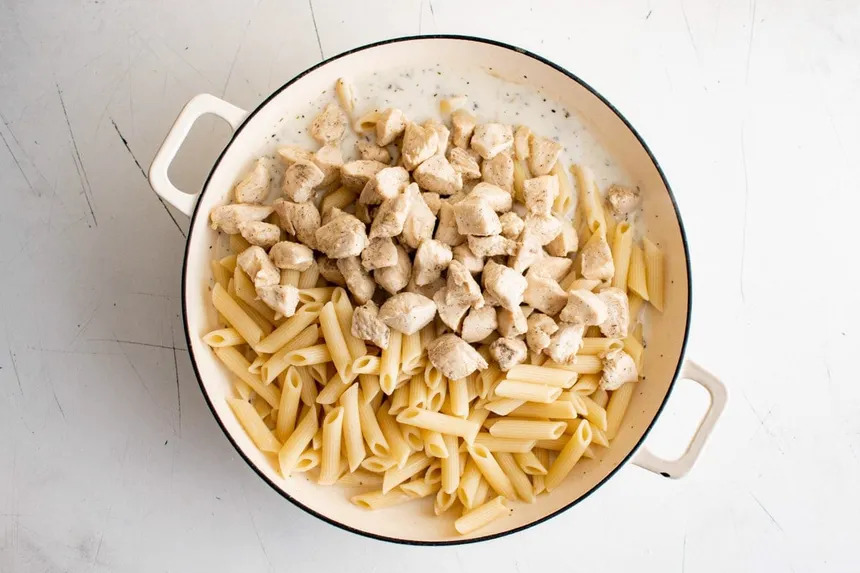

Pasta and Chicken

Ingredients
- Penne Pasta [link]500 gEGP 17
- Chicken Breast [link]500 gEGP 131
- Potato [link]500 gEGP 6
- Oil [link]200 mlEGP 22
- Cooking Cream [link]500 mlEGP 144
- Chicken Spices
- Salt
- Garlic Powder
- TotalEGP 321
Steps
1. Cook 500 g pasta until al dente, then drain.
2. Cut 500 g chicken breast into dices. Cook in a pan with chicken spices, salt, and garlic powder until golden and cooked through.
3. Peel and cube 500 g potatoes. Fry in 200 ml oil until golden and crispy.
4. Add 500 ml cooking cream to the chicken, stir, and let it simmer for a few minutes.
5. Add the potatoes and pasta, toss everything together, and serve.